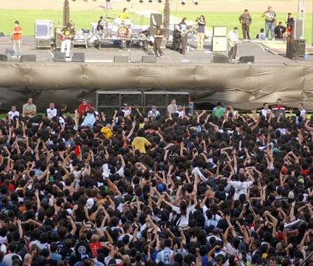
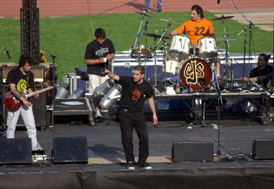

|
||||||
Callejeros... El Regreso Jueves 21 de setiembre de 2006 – Estadio Chateau Carreras, Córdoba
Fotos:Irma Montiel - LaNacion.com |
||||||
 |
Después de tantos intentos fallidos, Callejeros pudo finalmente concretar su regreso oficial a los escenarios. Regreso que lo tenía negado desde de la tragedia de Cromañon y, aun más, este año fueron muchos los proyectos por tocar que fracasaron. Sin embargo, la tan metafórica llegada de la primavera parece haberse hecho realidad esta vez. Los dirigentes políticos, la sociedad, algunos periodistas... por primera vez comprendieron que dentro de un marco legal ajustado y con las medidas de seguridad necesarias, todo es posible. Así fue como la banda de Villa Celina pudo hacer libremente lo que sabe hacer: música. |
|||||
| músicos y público. Desde arriba del escenario Pato, el cantante, manejó de manera casi perfecta esta situación, metido de lleno a la música que los ocupaba esa fecha y con algunos comentarios acerca de todo lo que ellos y la gente que el 30 de diciembre de 2004 estuvo en Cromañon, sufrieron y sufren día a día. El momento más triste, pero lleno de esperanza a la vez, fue cuando el mismo Pato dijo que todos, como sociedad, necesitábamos terminar ese recital; siendo esa la mejor forma de recordar a las víctimas: “Cada vez que toquemos, ellos estarán presentes.” El regreso de Callejeros fue de día y con el control policial más sorprendente que un recital de rock tuviera en Córdoba (1.600 efectivos). Pero sin duda, lo más destacable fue el excelente comportamiento que tuvo el público y eso que no eran pocos: alrededor de 20.000 personas se dieron cita en el Chateau. Como primera experiencia y teniendo en cuenta que el show se armó en tan solo tres días, el resultado final nunca deja de ser positivo. Solo será cuestión de que poco a poco podamos volver a verlos de noche, con luces y quizá en un escenario más al reparo del viento, como el rock se merece. Finalmente nos queda como reflexión de que el camino de la justicia es y será siempre el más indicado. Callejeros pudo tocar nuevamente como durante todo este tiempo debió hacerlo, pero no nos olvidemos de las 194 almas que aun necesitan encontrar responsables. |
||||||
|  | ||||||
Revista Jamming - Córdoba, Argentina - Registro de la Propiedad Intelectual en Trámite
|
||||||